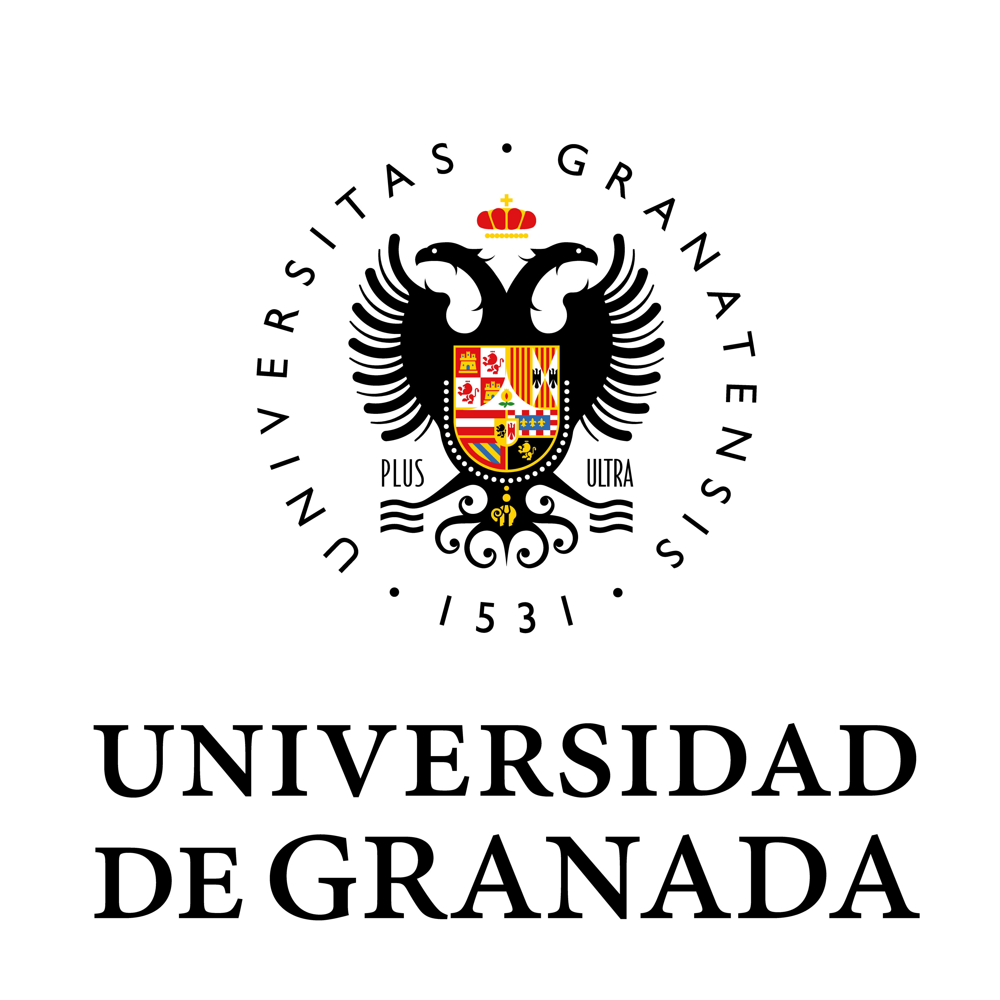
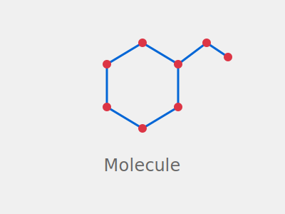

Inteligencia artificial y futuro científico
La espada de doble filo: Progreso, riesgo epistémico y el cultivo de monoculturas
Aníbal M. Astobiza
Universidad de Granada

Resumen Ejecutivo
- ✓ La teoría no desaparece: se redistribuye en infraestructuras de datos
- ⚠️ La automatización acelera pero introduce sesgos y crisis de reproducibilidad
- üë©‚Äçüéì El cient√≠fico evoluciona a director estrat√©gico y curador epist√©mico
- üé≠ Las ilusiones de entendimiento amenazan la comprensi√≥n genuina
- üåæ Riesgo de monoculturas que reducen la diversidad epist√©mica
La Crisis Percibida del Descubrimiento
La Carga del Conocimiento:
- Ideas nuevas exponencialmente costosas
- "Fricción científica" en todos los dominios
- Rendimientos decrecientes del esfuerzo
Evidencia empírica:
- Ley de Moore: 20× más investigadores
- Agricultura: 6-20× más I+D
- Medicina: Costo creciente
Esta ansiedad institucional crea el contexto perfecto para la "salvación" por IA
La Provocación de Chris Anderson
"El diluvio de datos hace obsoleto el método científico. Con suficientes datos, los números hablan por sí mismos. La correlación es suficiente."
— Chris Anderson, Wired (2008)
¿Realmente marca el Big Data el fin de la teoría científica?
Hoja de Ruta
- La epistemología cambiante del conocimiento científico
- Las cuatro visiones de la IA como asistente de investigación
- El costo cognitivo: ilusiones de entendimiento
- El riesgo sistémico: monoculturas científicas
- La realidad vs. la exageración: ciencia defectuosa
- Navegando el futuro: hacia una ciencia responsable
Parte I
La Epistemología Cambiante del Conocimiento Científico
El Viaje de los Datos: Sabina Leonelli
Conceptos Clave:
- Datos relacionales: construidos, no dados
- Viaje de datos: Des/Recontextualización
- Curadores: trabajo invisible crucial
Contexto Original
↓
Descontextualización
↓
Viaje/Curación
↓
Recontextualización
Comprensión y Opacidad: Emily Sullivan
Tesis Central
La barrera para la comprensión en ML no es la opacidad interna, sino la falta de evidencia que conecte el modelo con el fenómeno.
$$\text{Comprensión} = f(\text{Vínculo Modelo-Fenómeno})$$
$$\text{Riesgo Inductivo} \propto \text{Valores No-Epistémicos}$$
Implicaciones
- La opacidad tolerable depende del contexto de aplicación
- Los valores éticos moldean los estándares de validación
Las Cuatro Visiones
La IA como el Asistente de Investigación Definitivo
El Bucle Autorreforzante de las Cuatro Visiones
Cada visión crea demanda para las otras → Integración en cascada
Parte II
El Costo Cognitivo: Ilusiones de Entendimiento
Confianza Epistémica y Externalización
Factores que aumentan confianza:
- Tareas percibidas como objetivas
- Requieren deliberación vs. intuición
- Sesgos humanos indeseables
- Antropomorfización ("colaborador")
La Paradoja del Experto
La confianza en IA aumenta cuando operamos fuera de nuestro dominio
Ej: Biólogo usando ML complejo = confianza ciega
Parte III
El Riesgo Sistémico: Cultivando Monoculturas
Monoculturas del Saber
La Tiranía de lo Cuantificable
- IA transforma todo en cuantificación
- Margina enfoques cualitativos
- 68M papers: IA reduce diversidad
⚠️ Colapso del Modelo
Cuando IA entrena con resultados de otras IA:
- Ecosistema autorreferencial
- Amplificación de sesgos
- "Olvido" de complejidad real
Monoculturas de Conocedores
"La diversidad, tanto cognitiva como demográfica, no es solo equidad social; es una necesidad epistémica"
Objetividad Débil
- Confunde uniformidad con neutralidad
- "Perspectiva desde ninguna parte"
- Punto de vista único disfrazado
Objetividad Fuerte
- Abraza múltiples perspectivas
- Diversidad como fortaleza
- Equipos diversos = ciencia robusta
La IA amenaza con reintroducir la fantasía del conocedor universal
Parte IV
La Realidad Impulsada por la Exageración
El Bucle de Retroalimentación Tóxico
"Obtienes más subvenciones si tus resultados son 'revolucionarios'"
Casos de Estudio: Contaminación por Exageración
üß™ Ciencia de Materiales (Nature, 2023)
- Afirmación: IA descubrió 2.2M nuevos materiales
- Realidad: 41 materiales "validados" → mayoría ya conocidos
- Impacto: Contaminación del registro científico
üåç Ciencia Pol√≠tica
- Afirmación: Predecir guerras civiles con >90% precisión
- Realidad: Fuga de datos (data leakage) no detectada
- Lección: "Resultados imposibles" ignorados por exageración
El Atolladero de la Automatización
Capacidades Reales de Agentes IA:
- ✓ Tareas cortas (<4h): rendimiento humano+
- ✗ Tareas largas (>8h): humanos duplican IA
- ✗ Reproducibilidad: problema no resuelto
La pregunta clave: No "¿Puede la IA hacer X?" sino
"¿Cuál es el costo de que la IA haga X con 99.9% fiabilidad vs. un estudiante?"
Convergencia Teórica: El Espejo de la IA
Insight La IA amplifica las patologías preexistentes de la cultura científica
Paradigmas Científicos: ¿Evolución o Involución?
| Paradigma |
Era |
Método |
Fortaleza |
Debilidad |
| Empírico |
Milenios |
Observación |
Contacto directo |
Alcance limitado |
| Teórico |
Siglos |
Modelos |
Comprensión profunda |
Abstracción |
| Computacional |
Décadas |
Simulación |
Escala |
Simplificación |
| Data-intensivo |
Actual |
ML + Big Data |
Velocidad |
¿Comprensión? |
Pregunta crítica: ¿Es progreso una ciencia que produce más pero entiende menos?
Aplicaciones Revolucionarias: Luces y Sombras
üåü √âxitos:
- AlphaFold: 200M+ estructuras
- Diseño de fármacos con IA
- Detección ondas gravitacionales
⚠️ Fracasos:
- 90% fármacos IA fallan en ensayos
- Sesgo en algoritmos médicos
- 70% estudios ML no reproducibles
Parte V
Navegando el Futuro: Hacia una Ciencia Responsable
De Oráculo a Herramienta: Cambio de Mentalidad
❌ IA como Oráculo:
- Infalible y objetiva
- Reemplaza juicio humano
- Caja negra confiable
- Automatización total
✅ IA como Herramienta:
- Falible y sesgada
- Aumenta capacidad humana
- Requiere supervisión experta
- Colaboración humano-máquina
Principio clave: Mantener la experiencia humana para validar el trabajo de la IA
Estrategias para Mitigar Monoculturas
-
Fomentar equipos diversos:
- Diversidad cognitiva y demográfica
- Múltiples perspectivas disciplinarias
- Resistir IA como reemplazo de colaboradores
-
Proteger diversidad metodológica:
- Valorar enfoques cualitativos
- Incentivar paradigmas no computacionales
- Financiación para métodos alternativos
-
Estándares de rigor (REFORMS):
- Transparencia en datos y modelos
- Prevención de fuga de datos
- Revisión por pares especializada
El Argumento para la "Ciencia Lenta"
"La crisis de la IA presenta una oportunidad para reflexión profunda: ¿es la hiperproductividad realmente deseable?"
Ciencia Rápida:
- Métricas de publicación
- Cantidad sobre calidad
- Competencia feroz
- Resultados incrementales
Ciencia Lenta:
- Comprensión profunda
- Calidad y rigor
- Colaboración reflexiva
- Avances disruptivos
La IA como espejo nos obliga a confrontar las patologías de nuestra cultura científica
Métodos
Arquitectura del Científico Algorítmico y sus Límites
Pipeline de Investigación: Puntos de Falla
Protocolo de Validación Integral
Validación en Cuatro Niveles
- Técnica: Métricas de ML (accuracy, F1, AUC)
- Científica: Reproducibilidad, generalización
- Ética: Sesgo, equidad, transparencia
- Epistémica: Comprensión real vs. correlación superficial
$\text{Confiabilidad} = \alpha \cdot \text{Precisión} + \beta \cdot \text{Reproducibilidad} + \gamma \cdot \text{Equidad} + \delta \cdot \text{Comprensión}$
donde $\alpha + \beta + \gamma + \delta = 1$ y dependen del dominio y riesgo
Resultados
Casos de Éxito, Fracasos y Lecciones
AlphaFold: Éxito con Matices
✅ Impacto Positivo:
- 200+ millones de estructuras
- Precisión: 92.4 GDT
- Nobel 2024
- Democratización global
⚠️ Limitaciones:
- No explica mecanismos de plegado
- Fallos en proteínas desordenadas
- Riesgo de sobre-confianza

Matriz de Riesgos por Dominio y Visión
Escala: 1 (bajo) – 10 (crítico) | Rojo = Mayor riesgo epistémico
Análisis de Robustez
Limitaciones, Desafíos y Puntos Ciegos
La Crisis de Reproducibilidad se Profundiza
Discusión
Implicaciones, Reflexiones y Caminos
El Científico como Director de Orquesta
Antes:
- Ejecutor manual
- Análisis individual
- Publicación lineal
- Experto especializado
Ahora:
- Director estratégico
- Curador epistémico
- Validador crítico
- Guardián del sentido
Clave El humano debe mantener el control del sentido y la dirección
Hoja de Ruta: Hacia una IA Científica Responsable
Mensajes Clave: La Espada de Doble Filo
üó°Ô∏è La IA amplifica tanto virtudes como vicios de la ciencia
üí° La teor√≠a se transforma, no desaparece
üë• La diversidad epist√©mica es nuestra mejor defensa
üéØ De oráculo a herramienta: mantener el control humano
üêå Ciencia lenta: calidad sobre cantidad
La Pregunta Fundamental
"¿Es progreso una ciencia que produce más pero entiende menos?"
La respuesta determinará el futuro de la empresa científica
¡Gracias!
✉ amastobiza@ugr.es
"La ciencia debe permanecer humana para seguir siendo ciencia"